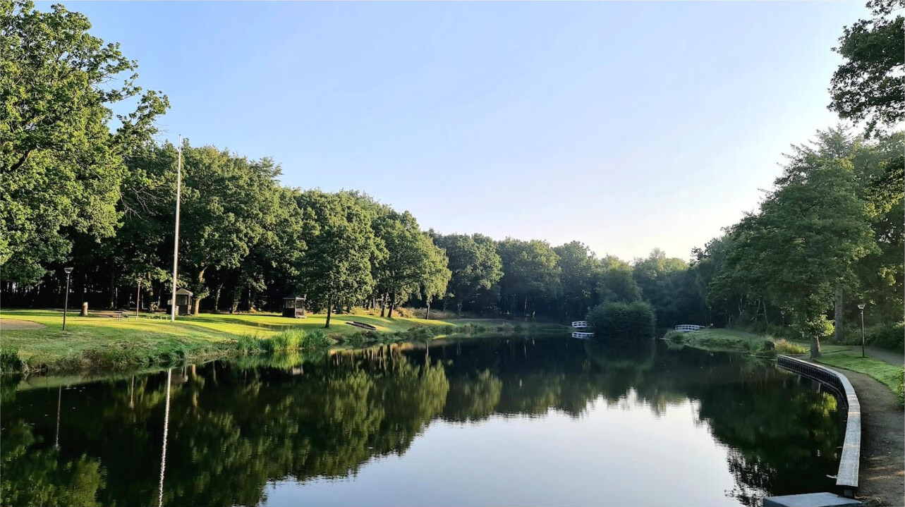

Et stærkt lokalt erhvervsfællesskab.
TEB samler byens virksomheder, landbrug og selvstændige omkring synlighed, netværk og Tistrups udvikling.

Tre hurtige indgange til det vigtigste i og omkring Tistrup.
Find arrangementer, kalender, nyt fra byen og muligheder for at være med.
Se hvad der sker → 02Find erhvervsfællesskabet, lokale forbindelser og vejen ind i TEB.
Gå til erhverv → 03Få et første overblik over byen, fællesskabet, naturen og hverdagslivet.
Mød Tistrup →Planen samler Tistrups overordnede mål og ambitioner. Den er blevet til med lokal involvering, er godkendt af Varde Kommune og danner ramme om en række projekter og initiativer.
TEB samler byens virksomheder, landbrug og selvstændige omkring synlighed, netværk og Tistrups udvikling.
Se den løbende kalender på Tistrup Nyt. Den fysiske bykalender bliver opdateret hver anden måned.
Medlemmer og frivillige gør arbejdet muligt.
Vi passer Tistrup Anlæg, søen, legepladsen og By-skoven.
Vi står bag blandt andet Midsommerfest, Jul i Tistrup og fælles arrangementer.
Vi samler borgere og erhverv og arbejder for byens interesser og udvikling.
Et medlemskab støtter arbejdet for byen, erhvervslivet og fællesskabet – og giver dig en direkte vej til at være med.